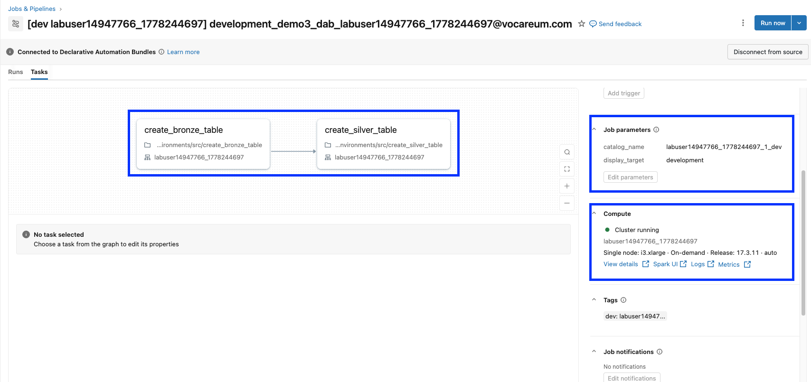
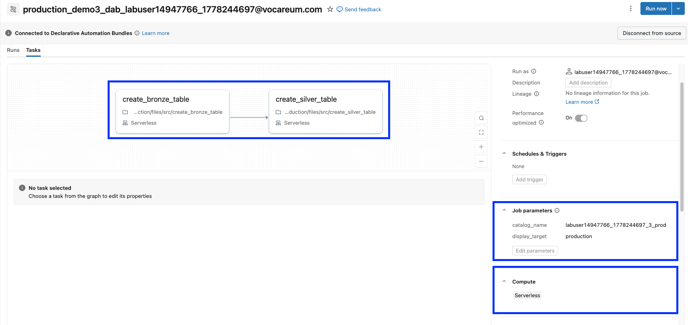

Section 5 · Implementing CI-CD · Quelle: Kurs 8, Modul 03
Ein Bundle, das nur eine einzige Zielumgebung kennt, deckt selten die Realität ab: Meist soll derselbe Job in einer kleinen, günstigen Entwicklungsumgebung getestet werden, bevor er unverändert gegen die vollständigen Produktionsdaten läuft – ohne die Job-Definition zweimal pflegen zu müssen. Declarative Automation Bundles lösen das über drei Mechanismen, die zusammenspielen: mehrere Einträge in der targets-Zuordnung, wiederverwendbare Bundle-Variablen und die include-Zuordnung, mit der sich Ressourcen-Definitionen in eigene YAML-Dateien auslagern lassen.
Statt die komplette Job-Definition direkt in databricks.yml zu schreiben, lagert man sie – sobald ein Projekt wächst – in eine eigene Datei im resources-Ordner aus und bindet sie über include ein. Das hält die Hauptdatei übersichtlich und erlaubt es, mehrere Personen parallel an unterschiedlichen Ressourcen zu arbeiten:
include: - "./resources/demo_03_job.job.yml" # Full Job Configuration within the resources folder
# resources/demo_03_job.job.yml
resources:
jobs:
demo03_job:
name: ${bundle.target}_demo3_dab_${workspace.current_user.userName}
tasks:
- task_key: create_bronze_table
notebook_task:
notebook_path: ../src/create_bronze_table.ipynb
source: WORKSPACE
- task_key: create_silver_table
depends_on:
- task_key: create_bronze_table
notebook_task:
notebook_path: ../src/create_silver_table.ipynb
source: WORKSPACE
parameters:
- name: display_target
default: ${bundle.target}
- name: catalog_name
default: ${var.target_catalog}
Auffällig ist, dass weder Jobname noch Katalog fest verdrahtet sind, sondern über Platzhalter (${...}) referenziert werden. ${bundle.target} wird automatisch durch den Namen des aktuell deployten Targets ersetzt (z. B. development oder production); ${var.target_catalog} verweist auf eine selbst definierte Bundle-Variable.
Variablen werden zentral in der Top-Level-Zuordnung variables deklariert und können sich gegenseitig referenzieren, sodass sich z. B. aus einem Benutzernamen automatisch mehrere Katalognamen ableiten lassen:
variables:
my_lab_user_name:
description: Add your lab user name
default: ${workspace.current_user.short_name} # dynamisch der eigene Benutzername
catalog_dev:
description: Development catalog for the project. Append _1_dev to the user name.
default: ${var.my_lab_user_name}_1_dev
catalog_prod:
description: Production catalog for the project. Append _3_prod to the user name.
default: ${var.my_lab_user_name}_3_prod
target_catalog:
description: Target catalog to use for deployment - default is 'dev'.
default: ${var.catalog_dev}
raw_data_path:
description: Path to source CSV files to ingest (dev/stage/prod) - default is 'dev'.
default: /Volumes/${var.target_catalog}/default/health
## Lookup-Variable: ermittelt die Cluster-ID anhand des Cluster-Namens
my_cluster_id:
description: Get the lab cluster ID using a lookup variable.
lookup:
cluster: labuser15933383_1784728005
Der letzte Eintrag zeigt eine Lookup-Variable: Statt einen festen Wert einzutragen, sucht die CLI beim Deployment ein bestehendes Objekt (hier: einen Cluster) über seinen Namen und löst die Variable automatisch zu dessen ID auf. Lookups funktionieren für zahlreiche Objekttypen, u. a. cluster, job, pipeline, warehouse, metastore und service_principal – nützlich überall dort, wo eine Konfiguration auf eine ID verweisen muss, die je nach Workspace unterschiedlich ist.
Erst in der targets-Zuordnung bekommen die Variablen ihre konkreten, umgebungsspezifischen Werte. Jedes Target kann Werte aus variables überschreiben und sogar einzelne Task-Eigenschaften (z. B. das Rechencluster) direkt in der resources-Struktur überschreiben:
targets:
development:
mode: development
default: true
workspace:
root_path: /Workspace/Users/${workspace.current_user.userName}/.bundle/${bundle.name}/${bundle.target}
# Kleines Lab-Cluster fuer die Entwicklungsumgebung verwenden
resources:
jobs:
demo03_job:
tasks:
- task_key: create_bronze_table
existing_cluster_id: ${var.my_cluster_id}
- task_key: create_silver_table
existing_cluster_id: ${var.my_cluster_id}
production:
mode: production
workspace:
root_path: /Workspace/Users/${workspace.current_user.userName}/.bundle/${bundle.name}/${bundle.target}
## Im Produktions-Target auf den Produktionskatalog umschalten
variables:
target_catalog: ${var.catalog_prod}
Im Beispiel bekommt nur die Entwicklungsumgebung ein fest zugewiesenes (kleines) Cluster – sinnvoll, weil die Entwicklungsdaten klein und statisch sind. Für production wird keine Compute-Vorgabe überschrieben, sodass der Job auf Serverless-Compute läuft, das sich automatisch an wachsende Datenmengen anpasst. Die Variable target_catalog zeigt standardmäßig auf den Dev-Katalog (${var.catalog_dev}); nur im production-Target wird sie explizit auf ${var.catalog_prod} umgebogen – die Job-Definition selbst bleibt dabei komplett unverändert.


Mit --output json lässt sich die vollständig aufgelöste Konfiguration (alle Variablen bereits ersetzt) prüfen, bevor tatsächlich deployt wird – hilfreich, um Substitutionsfehler frühzeitig zu erkennen:
# Aufgeloeste Konfiguration im development-Target als JSON anzeigen databricks bundle validate --output json # In die Entwicklungsumgebung deployen und den Job dort ausfuehren databricks bundle deploy -t development databricks bundle run -t development demo03_job # Dieselbe, unveraenderte Bundle-Definition in die Produktion deployen databricks bundle deploy -t production databricks bundle run -t production demo03_job # Variablen bei Bedarf gezielt von der Kommandozeile ueberschreiben databricks bundle deploy --var="target_catalog=labuser123_3_prod" -t production # Beide Umgebungen wieder aufraeumen databricks bundle destroy --auto-approve databricks bundle destroy -t production --auto-approve
| Quelle des Variablenwerts | Priorität |
|---|---|
--var-Option beim CLI-Aufruf | höchste Priorität |
Umgebungsvariable BUNDLE_VAR_<name> | 2 |
Datei variable-overrides.json | 3 |
variables-Zuordnung innerhalb eines Targets | 4 |
Standardwert (default) in der Top-Level-variables-Zuordnung | niedrigste Priorität |